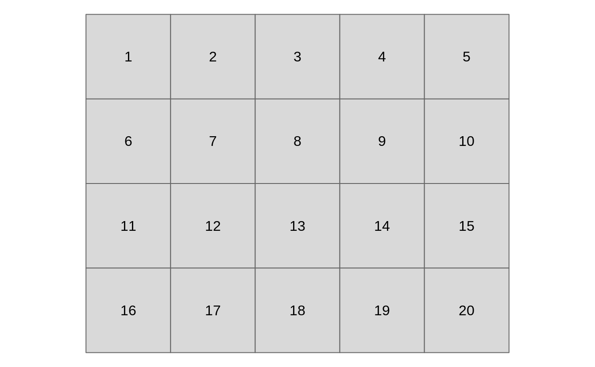
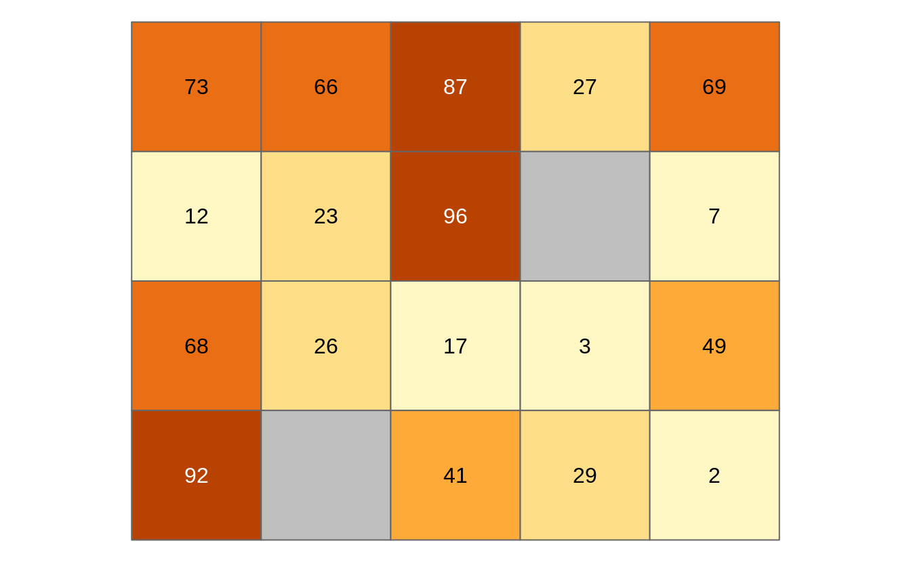
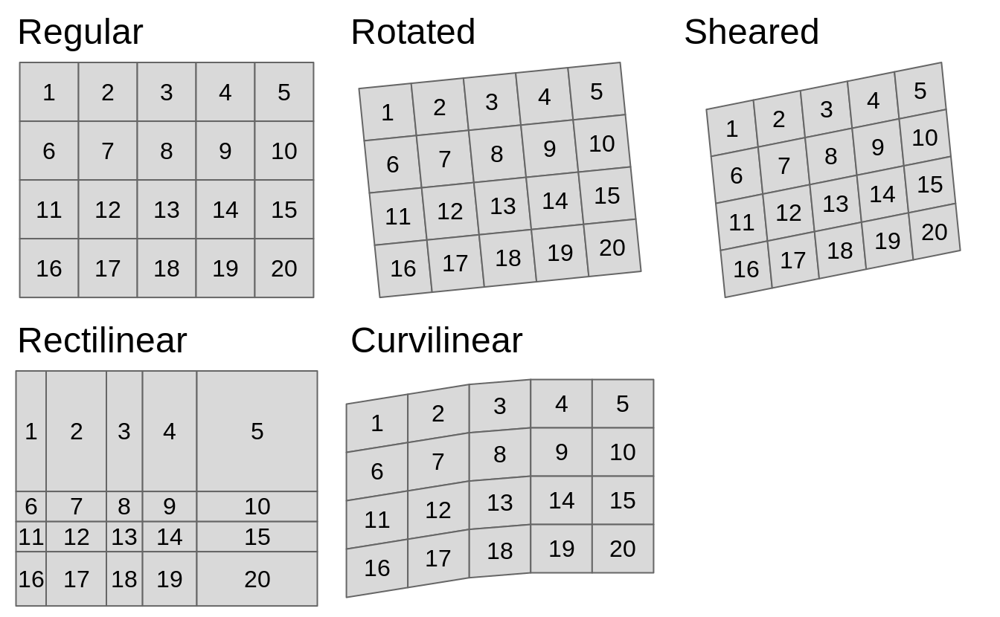

Chapter 2 Spatial data in R
2.1 Introduction
Vector and raster data models are two basic models used to represent spatial data. These spatial data models are closely related to map making, with each model having its own pros and cons. This chapter describes the vector (section 2.2) and raster (section 2.3) models, and also their implementations in R in the form of the sf (section 2.2.2) and stars (section 2.3.2) packages. Next, it focuses on the map projections (4.1). This section gives a background on why do we need map projections and how to translate spatial data from an ellipsoid into a flat surface or computer screen. It also explains basic terms and gives an overview of map projections.
2.2 Vector data
R has several packages aimed to represent spatial vector data. Recently, the terra package has been released containing a new vector data representation. For more than a decade, the sp package was a standard of vector data representation in R. However, now this package is in the maintenance mode only, and its successor, sf is recommended. The tmap package has been using sf since version 2.0. In the two next sections, we introduce vector data model (section 2.2.1) and show how the sf package works with spatial data (section 2.2.2).
2.2.1 Vector data model
…
The vector data model consists of two main elements: geometries and attributes.
The role of geometry is to describe the location and shape of spatial objects. There are three basic types of geometries: points, lines, and polygons. All of them are build using the same main idea of coordinates.
A point is represented by a pair of coordinates, usually described as X and Y. It allows for locating this point in some space. X and Y could be unitless, in degrees, or in some measure units, such as meters. Points can represent features on different scales, from a GPS position, location of a bench in a park, to a city on a small scale map. They are also used to express abstract features, such as locations of map labels. Properties of points can be expressed on maps by different point sizes, colors, or shapes.
A line extends the idea of a point. It consists of several points (with coordinates) that are arranged in some order. Consecutive points are connected by straight lines. Therefore, a straight spatial line consists of two points (two pairs of coordinates), while complex spatial lines could be created based on a large number of points. It gives the illusion that the line is curved. Lines are used to representing linear features, such as roads, rivers, boundaries, footpaths, etc. In this case, we can express line features’ attributes using either lines’ color or their widths.
A polygon is again a set of ordered points connected by straight lines. Its only difference from the line is that the first and the last point in a polygon has the same coordinates, and thus close the object. The polygon representation is used to represent shapes and locations of different objects, from a lake or a patch of vegetation, through a building or a city block, to some administrative units. Polygons also have one unique feature - they could have holes. A polygon hole represents an area inside of the polygon but does not belong to it. For example, a lake with an island can be depicted as a polygon with a hole. The values of polygons’ attributes can be represented by the areas (fill) colors.
The second part of the vector data model relates to attributes. Attributes are usually stored as a table describing the properties of the data. In this table, each column depicts some property, such as an identification number, a name of a feature, or a value of some characteristic. Each row, on the other hand, relates to a single geometry.

The above ideas could be implemented in many ways. Currently, the Simple Feature Access seems to be the most widely used standard In it, a feature is every object or concept that have spatial location or extent. Simple feature standard makes a clear distinction between single- and multi-element features. We can have a POINT feature and a MULTIPOINT feature, and similarly LINESTRING and MULTILINESTRING, and POLYGON and MULTIPOLYGON. The main difference between single element features (such as POINT or POLYGON) and multi-element features (such as MULTIPOINT or MULTIPOLYGON) can be clearly seen in attribute tables. For example, six points stored as POINT features will have six separate rows, while six points stored as just one MULTIPOINT feature will have one row. The simple feature standard also describes a number of additional geometry types, including Curve, Surface, or Triangle. Finally, GeometryCollection exists that contain all of the possible geometry types.
There are a couple hundreds of file formats that can store spatial vector data.
One of the simplest ways to store spatial data is in the form of a text file (.csv) or as a spreadsheet (.xls or .xlsx).
While it makes storing point data simple, with two columns representing coordinates, it is not easy to store more complex objects in this way.
Text files are also not suitable for storing information about the coordinate reference system used.
Historically, the shapefile format (.shp) developed by the ESRI company gained a lot of interest and become the most widely supported spatial vector file format.
Despite its popularity, this format has a number of shortcomings, including the need to store several files, attribute names limited to ten characters, the ability to store up to 255 attributes and files up to 2GB, and many more.
A fairly recent file format, OGC GeoPackage (.gpkg), was developed as an alternative.
It is a single file database free from the limitation of the shapefile format.
Other popular spatial vector file formats include GeoJSON (.geojson), GPX (.gpx), and KML (.kml).
2.2.2 The sf package
The sf package implements ideas behind the Simple Feature standard.
Its main class, sf, has the form of an extended data frame, where each row is a spatial feature.
In it, attributes of the vector data are stored as columns.
It also has one additional column, most often named geom or geometry1.
This column contains geometries in a form of well-known text (WKT), storing all of the coordinates.
The sf package can read all of the spatial data formats mentioned in the previous section using the read_sf() function2.
# replace this data with some new tmap dataset
library(sf)
file_path = system.file("shapes/world.gpkg", package = "spData")
x = read_sf(file_path)The new object, x, has a sf class.
It has 177 features (rows or geometries) and 10 fields (columns with attributes).
There is also an 11th column, geom, that stores geometries of each feature.
Objects of class sf also display a header containing spatial metadata.
It includes geometry type, dimension (XY, XYZ, XYM, XYZM), bounding box (bbox), and information about the used Coordinate Reference System (CRS).
x
#> Simple feature collection with 177 features and 10 fields
#> geometry type: MULTIPOLYGON
#> dimension: XY
#> bbox: xmin: -180 ymin: -90 xmax: 180 ymax: 83.6
#> geographic CRS: WGS 84
#> [90m# A tibble: 177 x 11[39m
#> iso_a2 name_long continent region_un subregion type
#> [3m[90m<chr>[39m[23m [3m[90m<chr>[39m[23m [3m[90m<chr>[39m[23m [3m[90m<chr>[39m[23m [3m[90m<chr>[39m[23m [3m[90m<chr>[39m[23m
#> [90m 1[39m FJ Fiji Oceania Oceania Melanesia Sove…
#> [90m 2[39m TZ Tanzania Africa Africa Eastern … Sove…
#> [90m 3[39m EH Western … Africa Africa Northern… Inde…
#> [90m 4[39m CA Canada North Am… Americas Northern… Sove…
#> [90m 5[39m US United S… North Am… Americas Northern… Coun…
#> [90m 6[39m KZ Kazakhst… Asia Asia Central … Sove…
#> [90m 7[39m UZ Uzbekist… Asia Asia Central … Sove…
#> [90m 8[39m PG Papua Ne… Oceania Oceania Melanesia Sove…
#> [90m 9[39m ID Indonesia Asia Asia South-Ea… Sove…
#> [90m10[39m AR Argentina South Am… Americas South Am… Sove…
#> [90m# … with 167 more rows, and 5 more variables:[39m
#> [90m# area_km2 [3m[90m<dbl>[90m[23m, pop [3m[90m<dbl>[90m[23m, lifeExp [3m[90m<dbl>[90m[23m,[39m
#> [90m# gdpPercap [3m[90m<dbl>[90m[23m, geom [3m[90m<MULTIPOLYGON [°]>[90m[23m[39mThe x object has MULTIPOLYGON geometry type, where each feature (row) can consist of one or more polygons.
Each polygon’s vertices are represented by a pair of values (dimension: XY).
Bounding box allows to quickly understand the spatial extension of the input data.
Finally, it has geographic CRS named WGS 84.
You can learn more about Coordinate Reference Systems in section 4.1.
Spatial vector data of class sf can be also obtained using some of other R data packages.
For example, rnaturalearth allows to download world map data, osmdata imports OpenStreetMap data as sf objects, and tigris loads TIGER/Line data.
The tmap package accepts spatial vector data objects from both sf and sp packages.
In case of having vector objects in a different representation, they should be converted into sf objects first, before making maps.
The sf package has the st_as_sf() function that translates objects of many classes, including Spatial (from the sp package), ppp, psp, and lpp (from the spatstat package), to the objects of class sf.
The st_as_sf() function also allows to turn data frames into sf objects - the user need to provide the input data frame, names of columns with coordinates, and additionally definition of the CRS of the data.
For example my_sf = st_as_sf(my_df, coords = c("Xcolumn", "Ycolumn"), crs = 4326).
2.3 Raster data
Several R packages can be used to represent spatial raster data, including raster and its successor terra. The raster package was used as a backbone of raster data visualization until tmap version 3.0. In the two next sections, we present raster data model (section 2.3.1) and introduce the stars package (section 2.3.2).
2.3.1 Raster data model
The raster data model represents the world using a continuous grid of cells. Each cell has an associated value
#replace example later
library(tmap)
library(spData)
#> To access larger datasets in this package,
#> install the spDataLarge package with:
#> `install.packages('spDataLarge',
#> repos='https://nowosad.github.io/drat/',
#> type='source')`
library(stars)
#> Loading required package: abind
set.seed(2020-06-25)
mat = matrix(1:20, nrow = 5, ncol = 4)
dim(mat) = c(x = 5, y = 4)
sta = st_as_stars(mat)
attr(sta, "dimensions")[[2]]$delta = -1
sta_sf = st_as_sf(sta)
sta_sf$values = sample.int(100, 20)
sta_sf$values[c(9, 17)] = NA
tm_shape(sta_sf) +
tm_polygons() +
tm_text("A1") +
tm_layout(frame = FALSE)
#> Warning: Currect projection of shape sta_sf unknown.
#> Long-lat (WGS84) is assumed.
tm_shape(sta_sf) +
tm_polygons("values") +
tm_text("values") +
tm_layout(frame = FALSE, legend.show = FALSE)
#> Warning: Currect projection of shape sta_sf unknown.
#> Long-lat (WGS84) is assumed.
# regular grid
tm_sta_regular = tm_shape(sta_sf) +
tm_polygons() +
tm_text("A1") +
tm_layout(frame = FALSE, main.title = "Regular")
# rotated grids
sta_rotated = sta
attr(attr(sta_rotated, "dimensions"), "raster")$affine = c(0.1, 0.1)
sta_rotated_sf = st_as_sf(sta_rotated)
tm_sta_rotated = tm_shape(sta_rotated_sf) +
tm_polygons() +
tm_text("A1") +
tm_layout(frame = FALSE, main.title = "Rotated")
# sheared grids
sta_sheared = sta
attr(attr(sta_sheared, "dimensions"), "raster")$affine = c(0.1, 0.2)
sta_sheared_sf = st_as_sf(sta_sheared)
tm_sta_sheared = tm_shape(sta_sheared_sf) +
tm_polygons() +
tm_text("A1") +
tm_layout(frame = FALSE, main.title = "Sheared")
# rectilinear grids
x = c(0, 0.5, 1.5, 2.1, 3, 5)
y = rev(c(0.1, 1, 1.5, 2, 4))
sta_rectilinear = st_as_stars(list(m = mat),
dimensions = st_dimensions(x = x, y = y))
sta_rectilinear_sf = st_as_sf(sta_rectilinear)
tm_sta_rectilinear = tm_shape(sta_rectilinear_sf) +
tm_polygons() +
tm_text("m") +
tm_layout(frame = FALSE, main.title = "Rectilinear")
# curvilinear grids
sta_curvilinear = sta
X1 = matrix(rep(1:5, times = 4), nrow = 5, ncol = 4)
X2 = matrix(c(seq(3.36, 1, length.out = 4),
seq(3.52, 1.16, length.out = 4),
seq(3.68, 1.32, length.out = 4),
seq(3.68, 1.32, length.out = 4),
seq(3.68, 1.32, length.out = 4)),
nrow = 5, ncol = 4,
byrow = TRUE)
am = matrix(1:20, nrow = 5, ncol = 4)
sta_curvilinear = st_as_stars(am)
sta_curvilinear = st_as_stars(sta_curvilinear,
curvilinear = list(X1 = X1,
X2 = X2))
sta_curvilinear_sf = st_as_sf(sta_curvilinear)
tm_sta_curvilinear = tm_shape(sta_curvilinear_sf) +
tm_polygons() +
tm_text("A1") +
# tm_grid() +
tm_layout(frame = FALSE, main.title = "Curvilinear")
# all
tm_sta_all = tmap_arrange(tm_sta_regular, tm_sta_rotated, tm_sta_sheared,
tm_sta_rectilinear, tm_sta_curvilinear)
tm_sta_all
#> Warning: Currect projection of shape sta_sf unknown.
#> Long-lat (WGS84) is assumed.
#> Warning: Currect projection of shape sta_rotated_sf
#> unknown. Long-lat (WGS84) is assumed.
#> Warning: Currect projection of shape sta_sheared_sf
#> unknown. Long-lat (WGS84) is assumed.
#> Warning: Currect projection of shape sta_rectilinear_sf
#> unknown. Long-lat (WGS84) is assumed.
#> Warning: Currect projection of shape sta_sf unknown.
#> Long-lat (WGS84) is assumed.
#> Warning: Currect projection of shape sta_rotated_sf
#> unknown. Long-lat (WGS84) is assumed.
#> Warning: Currect projection of shape sta_sheared_sf
#> unknown. Long-lat (WGS84) is assumed.
#> Warning: Currect projection of shape sta_rectilinear_sf
#> unknown. Long-lat (WGS84) is assumed.
2.3.2 The stars package